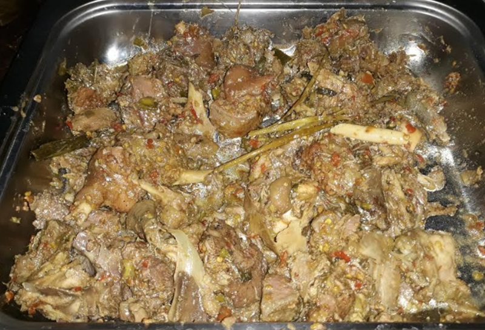

- 
-
Makanan khas suku Mongondow yang terbuat dari bahan utama daging sapi atau bolog, yang dalam bahasa asli berarti memasukan ke dalam bambu (patung) lalu dimasak dengan api sedang.
Proses masak dengan cara dibakar untuk itu selama proses pembakaran harus dijaga agar api dalam pembakaran tidak mati atau terlalu besar.
Makanan sinandoi cukup diminati oleh masyarakat di sana, rasanya yang enak. Biasanya sinandoi disajikan dalam berbagai acara seperti: acara adat, acara pernikahan dan acara besar lainnya.